Source: AVEVA Application Server 2023 Training Manual, Module 8 Section 1 + Lab 14
Covers exporting/importing automation objects between Galaxies, version management, import preferences, and hands-on lab exercises for upgrading, downgrading, and duplicating objects. (pages 8-3 to 8-30)
25.1 Overview — Module 8 Objectives
Reference: Module 8 Objectives (page 8-2)
Module 8 covers the essential object management operations in AVEVA Application Server. This lesson focuses on Section 1 — Object Export and Import — along with Lab 14, which provides hands-on practice with the complete export/import lifecycle.
Module Objectives:
Export objects — Save configured objects to external files (.aaPKG) for backup or sharing between Galaxies
Import objects — Bring objects from external package files into an active Galaxy
Upgrade objects — Update internal class versions for software compatibility
Revert to previous object versions — Roll back to a known good state by importing an older export
25.2 Exporting Automation Objects
Reference: Section 1 — Object Export and Import (pages 8-3 to 8-5)
Use the IDE's Export Selected as CSV function to share objects with other users or to recreate them in other Galaxies. The resulting file (.aaPKG extension) contains the selected objects, their associated templates, and the configuration state of those objects. The export file can later be imported into the same or another Galaxy.
Key behaviors of the export process:
Subsequent exports retain the default folder as last used for the duration of the IDE session. If the designated file already exists, you are prompted to confirm overwrite.
If any of the selected objects are currently checked out, only the checked-in versions are exported.
When exporting an object instance, it will also include all parents of that object all the way back to and including the base template.
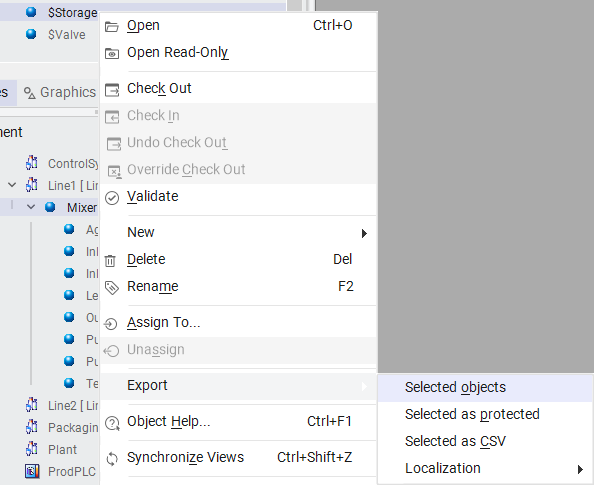
Right-click context menu on the $Mixer object within the Deployment tree. The Export submenu is expanded showing four options: Selected objects (highlighted), Selected as protected, Selected as CSV, and Localization. You can multi-select objects using Shift+Click or Ctrl+Click before exporting (page 8-4)
Exporting the Entire Galaxy
Exporting an entire Galaxy is similar to using the Galaxy Database Manager utility to back up the database. However, there are important differences:
Feature
Galaxy Export (.aaPKG)
Database Manager Backup
Change logs
Not exported
Saved in backup
Security model settings
Removed from export
Retained in backup
Portability
Can be imported into any Galaxy
Restore to same server only
⚠️ Important: Script functions are NOT included in an export. You must ensure that script function libraries are transferred separately when moving objects between Galaxies.
The Export Dialog
After selecting Export → Selected objects, the Export Automation Object(s) dialog box appears. Browse to the destination path and enter a file name with the .aaPKG extension, then click Save.
The Export Selected objects dialog box. The user has navigated to C:\Training and entered the filename $StorageV2. The "Save as type" field shows Galaxy export/import files (*.aaPKG). Click Save to begin the export (page 8-5)
Export Completion
When the export process finishes, the Exporting object(s) dialog confirms success. The details pane shows each object processed and a summary message.
The Export completed dialog. The details show that both $UserDefined and $Storage were processed successfully, with a highlighted summary message: "Exported the selected objects successfully." Click Close to dismiss (page 8-5)
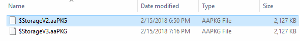
Windows File Explorer showing the exported .aaPKG files in the C:\Training directory: $StorageV2.aaPKG (2,127 KB) and $StorageV3.aaPKG (2,127 KB). These files are portable packages that can be imported into any Galaxy (page 8-5)
Export maintains containment and hierarchy: The export preserves the relationships between objects — including containment, hierarchy, and template derivation. If an object is currently checked out, the last checked-in version of the object's configuration is exported. The resulting .aaPKG file can be used to import the chosen objects into another existing Galaxy.
25.3 Importing Automation Objects
Reference: Section 1 — Object Export and Import (pages 8-6 to 8-9)
Objects can be reused from another Galaxy in your Galaxy. This saves time if the objects are already set up in another Galaxy. Importing instances previously exported from a Galaxy retains previous associations — such as assignment, containment, derivation, and area — whenever possible.
Supported Import File Formats
Format
Description
.aaPKG
Standard AVEVA package file — contains objects, templates, and configuration state
.aaPDF
Developer-created file using AVEVA Object Toolkit — contains configuration data and implementation code for one or more base templates
⚠️ Import Conflicts: Before starting, you cannot have two objects with the same name or more than one copy of the same version of an object in the same Galaxy. When you import an object, these conflicts are identified and you can manage them through the Import Preferences dialog.
Launching the Import
To import Automation objects, go to the Galaxy tab, select Import → Objects → From package.
The IDE Import panel. Under the Objects section (expanded), the From package option is available for importing objects from package files. Other options include From CSV and Explore product hub. The Tagname dictionary from CSV option is greyed out (page 8-6)
Selecting the Package File
The Import Objects from package dialog. Navigate to the folder containing your .aaPKG or .aaPDF files and select the file to import. Here, $StorageV2.aaPKG is selected from C:\Training. The file type filter shows Package files (*.aaPKG; *.aaPDF). Click Open (page 8-7)
25.4 Import Preferences and Conflict Resolution
Reference: Section 1 — Object Export and Import (pages 8-8 to 8-9)
The Import Preferences dialog appears after selecting the package file. This critical dialog controls how conflicts are resolved when imported objects overlap with existing objects in the Galaxy.
The Import Preferences dialog with four configuration sections. Section 1 defaults to "Overwrite if version is higher," Section 2 defaults to "Migrate," Section 3 defaults to "Skip," and Section 4 has "Never overwrite unprotected with protected" checked. Click Import to proceed (page 8-8)
Section 1: Objects with Same Tagname and Codebase
Option
Behavior
Default?
Skip: Do not import
Leaves the existing object unchanged
No
Overwrite if imported version is higher
Replaces existing only if the imported object is newer
Yes
Overwrite regardless of version
Replaces existing regardless of version comparison
No
Section 2: Base Templates with Different Revision or Minor Version
Option
Behavior
Default?
Skip: Do not migrate
Does not migrate objects with an older Codebase when a newer one exists
No
Migrate
Migrates an older codebase when the replacement object is available
Yes
Section 3: Objects with Same Tagname but Different Codebase
Option
Behavior
Default?
Skip: Do not import
Leaves the existing object unchanged
Yes
Rename object in Galaxy
Imports the new object; renames the existing Galaxy object
No
Rename importing object
Imports the new object; renames the incoming object
No
Section 4: Template Protection Change Management
Protection setting: The checkbox "Never overwrite an unprotected object with a protected object" is checked by default. This prevents protected objects from overwriting unprotected ones. Unchecking this box allows protected objects to overwrite unprotected objects during import.
Post-Import Rules
After the import process completes, the following rules apply:
If a toolset does not exist, it is created.
If the object belongs to a security group that does not exist, it is associated with the Default security group.
If the object belongs to an area that does not exist, it is associated with the Unassigned Area.
If the host to which the object is assigned does not exist, it is assigned to Unassigned Host.
If you selected Migrate, migrated objects are marked with "software upgrade required" if they are deployed — these objects will be upgraded when redeployed.
Tip: If you import a new version of an existing instance, the new version is marked as requiring deployment if the existing object is already deployed. You must redeploy to activate the changes.
25.5 Lab 14 — Exporting and Importing Objects
Reference: Lab 14 (pages 8-11 to 8-30)
Lab Objectives:
Use the Export Selected objects and Import Objects from package features of the IDE
Upgrade and downgrade object versions through export/import
Create copies of objects within the Galaxy
Introduction: In this lab, you will use the Export Selected objects and Import Objects from package features of the IDE. Specifically, you will use these features to upgrade and downgrade object versions. Then, you will make copies of objects within the Galaxy.
Part A: Creating the $Storage Object
Reference: Lab 14 (pages 8-12 to 8-14)
Step 1. In the IDE, Templates tab, Application template toolset, create a new derived template from the $UserDefined template named $Storage.
Step 2. Move the new $Storage template to the Training\Project template toolset.
Step 3. Right-click $Storage and select Properties.
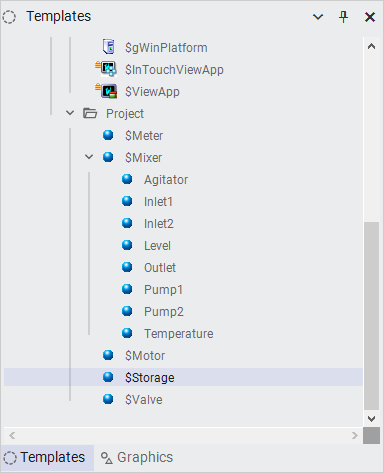
The Templates panel showing the Project toolset. The $Storage template (highlighted) has been created under Training\Project alongside $Meter, $Mixer, $Motor, and $Valve. The $Mixer is expanded showing its child attributes (page 8-12)
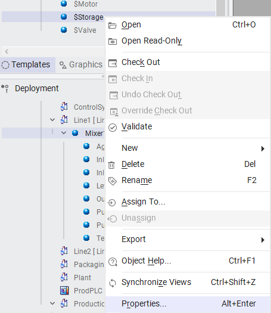
Right-click context menu on the $Storage object. The menu includes standard object management options: Open, Check Out, Validate, Delete, Rename, Export, and Properties (highlighted at the bottom with shortcut Alt+Enter). Select Properties to view the object's attributes (page 8-12)
Step 4. Click the Attributes tab.
Step 5. Scroll down to verify that the ConfigVersion attribute displays 1 in the Value column. The "1" indicates that this is the first version of the object.
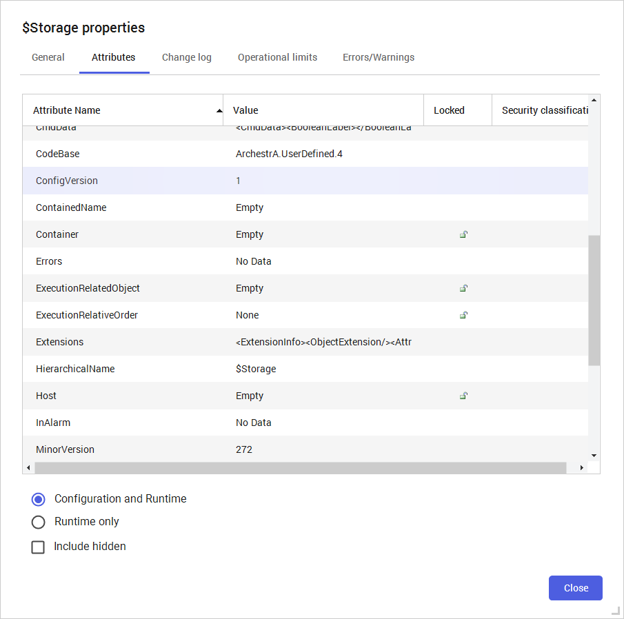
$Storage Properties dialog on the Attributes tab. The ConfigVersion row (circled in red) shows Value = 1, confirming this is version 1 of the object. Other visible attributes include CodeBase (ArchestrA.UserDefined.4), MinorVersion (272), and various system attributes (page 8-13)
Step 6. Click Close.
Adding Initial Attributes (Version 1)
Step 7. Open the $Storage configuration editor.
Step 8. Add an attribute named Pressure.
Step 9. Configure Pressure as follows:
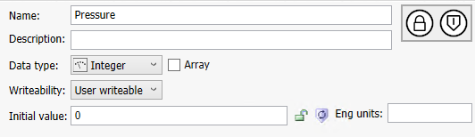
Attribute configuration for Pressure. Data type: Integer, Writeability: User writeable (default), Initial value: 0. Click the shield/checkmark button to save the attribute definition (page 8-13)
Step 10. Add and configure another attribute named Density with the same settings (Integer, User writeable, Initial value 0).
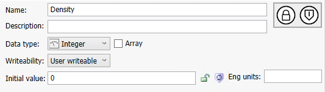
Attribute configuration for Density. Same settings as Pressure: Data type: Integer, Writeability: User writeable, Initial value: 0. This is the second custom attribute added to $Storage (page 8-14)
Step 11. Save and close, and check in the object with an appropriate comment.
Step 12. Right-click $Storage and select Properties.
Step 13. Click the Attributes tab.
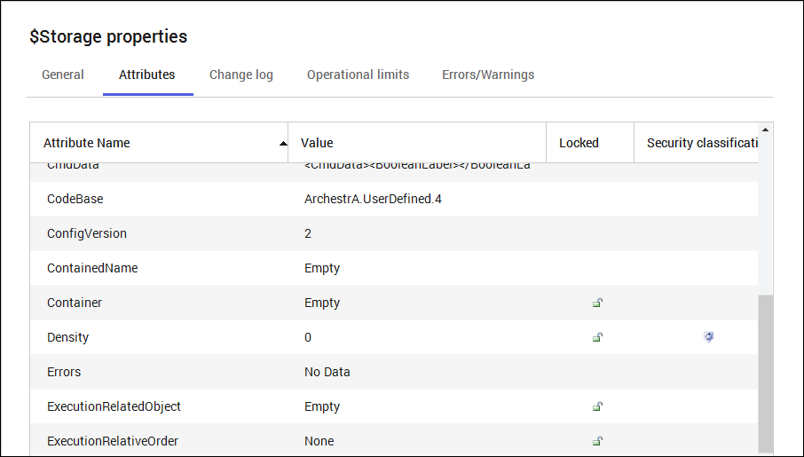
$Storage Properties dialog. The ConfigVersion (highlighted in red) has increased to 2. The new Density attribute is visible with Value 0. The ConfigVersion increases by 1 each time changes to the object are checked in (page 8-14)
ConfigVersion tracking: The ConfigVersion attribute increments automatically each time object changes are checked in. Version 1 = initial creation. Version 2 = after adding Pressure and Density. This version number is critical for import conflict resolution.
Step 14. Click Close.
Part B: Exporting Version 2 of $Storage
Reference: Lab 14 (pages 8-15 to 8-16)
Step 15. Right-click $Storage and select Export → Selected objects.
Right-click context menu with the Export submenu expanded. Selected objects is highlighted for selection. The tree view in the background shows the Deployment hierarchy with $Storage and other objects (page 8-15)
Step 16. Navigate to C:\Training.
Step 17. In the File name field, enter $StorageV2. This corresponds with ConfigVersion 2.
Step 18. Click Save.
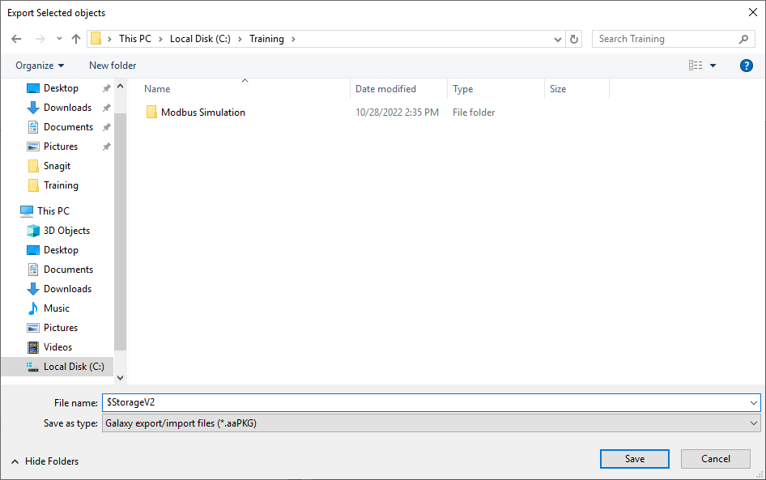
The Export Selected objects dialog. The filename is set to $StorageV2 to correspond with ConfigVersion 2 of the object. The destination is C:\Training and the file type is Galaxy export/import files (*.aaPKG) (page 8-15)
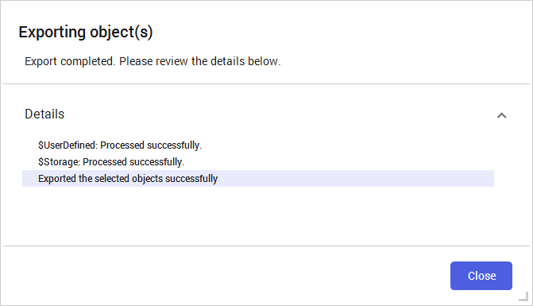
Export completed dialog. Both $UserDefined and $Storage were processed successfully. The $Storage object has been exported along with all parent objects in the derivation hierarchy. Click Close (page 8-16)
Part C: Creating Version 3 and Exporting
Reference: Lab 14 (pages 8-16 to 8-18)
Step 19. Click Close.
Step 20. Open the $Storage configuration editor.
Step 21. Add and configure two new attributes:
Attribute Name
Data Type
Category
Viscosity
Integer
User writeable (default)
Hardness
Integer (default)
User writeable (default)
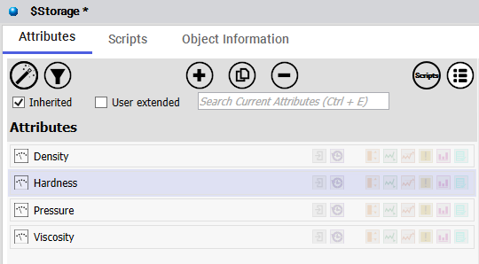
$Storage configuration editor on the Attributes tab. All four attributes are now visible in the attributes list: Density, Hardness (new), Pressure, and Viscosity (new). The Inherited checkbox is checked and search bar shows "Search Current Attributes (Ctrl + E)" (page 8-16)
Step 22. Save and close, and check in the object with an appropriate comment.
Step 23. Right-click $Storage and select Properties.
Step 24. Click the Attributes tab. The $Storage object has been upgraded to version 3.
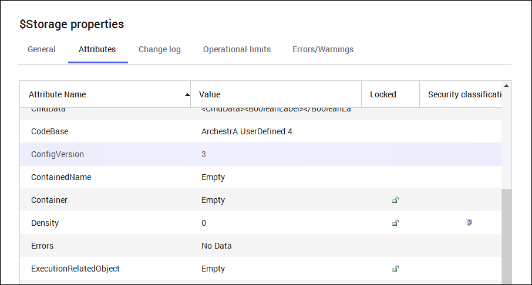
$Storage Properties dialog on the Attributes tab. The ConfigVersion (highlighted in red) now shows Value = 3, confirming the object has been upgraded to version 3 after adding Viscosity and Hardness attributes (page 8-17)
Step 25. Click Close.
Exporting Version 3
Step 26. Right-click $Storage and select Export → Selected objects.
Step 27. In the Export Selected objects dialog box, File name field, enter $StorageV3.
Step 28. Click Save.
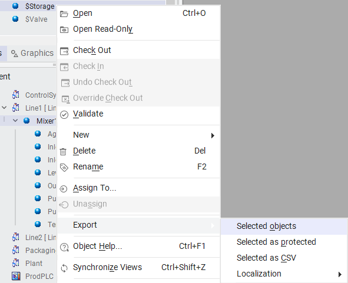
Right-click context menu with Export → Selected objects highlighted. This is the second export, this time for ConfigVersion 3 of the $Storage object (page 8-18)
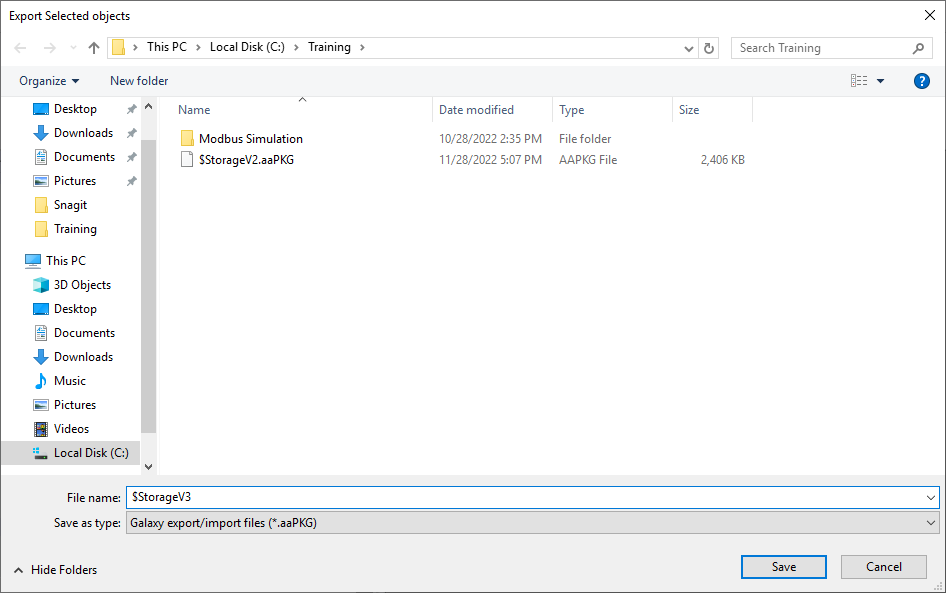
The Export Selected objects dialog showing the filename $StorageV3. The previously exported $StorageV2.aaPKG file is visible in the file list, confirming both versions are being saved as separate packages (page 8-18)
Step 29. When the Exporting object(s) progress is complete, click Close.
Part D: Deleting $Storage and Importing V2
Reference: Lab 14 (pages 8-19 to 8-24)
Step 30. Right-click $Storage and select Delete.
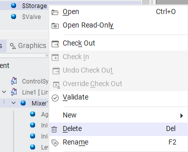
Right-click context menu with Delete (Del shortcut) highlighted. This will remove the $Storage object from the Galaxy. The background shows the object tree with SStorage, SValve, and other objects (page 8-19)
Step 31. Click Delete to confirm deletion of the $Storage object.
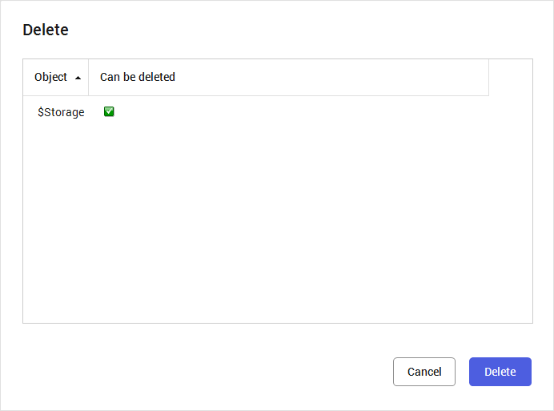
The Delete confirmation dialog. The table shows $Storage with a green checkmark under "Can be deleted," confirming the object is eligible for removal. Click Delete (blue button) to confirm, or Cancel to abort (page 8-19)
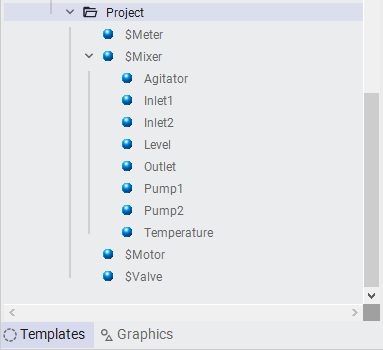
The Project toolset after deletion. $Storage no longer appears in the tree — only $Meter, $Mixer (expanded), $Motor, and $Valve remain. This confirms the object was successfully removed (page 8-20)
Importing $StorageV2.aaPKG
Step 32. Click the Galaxy menu to get to the backstage area.
Step 33. In the upper-left corner, click Import.
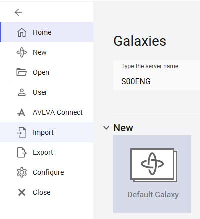
The Galaxy backstage view. The left sidebar shows Home, New, Open, User, AVEVA Connect, Import (circled in red), Export, Configure, and Close. The main panel shows the Galaxies section with Server: S00ENG and the Default Galaxy tile. Click Import to begin (page 8-20)
Step 34. In the Objects drop-down list, select From package.
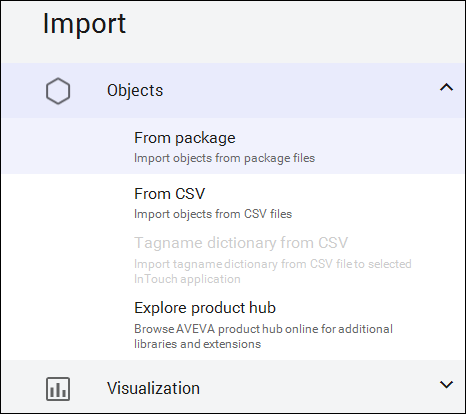
The Import panel with the Objects section expanded. The From package option (for importing objects from package files) is the first item. Other options include From CSV, Tagname dictionary from CSV, and Explore product hub. The Visualization section is collapsed below (page 8-21)
Step 35. Select $StorageV2.aaPKG.
Step 36. Click Open.
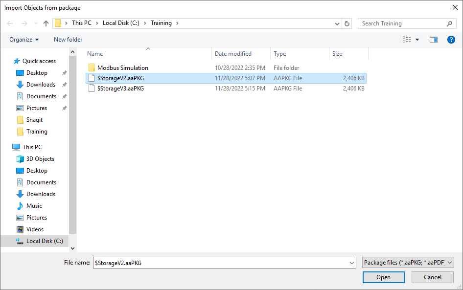
The Import Objects from package dialog showing $StorageV2.aaPKG selected (highlighted in blue). Both $StorageV2.aaPKG and $StorageV3.aaPKG are visible in the file list, each at 2,406 KB. Click Open to proceed (page 8-21)
Step 37. In the Import preferences dialog box, leave the default options and click Import.
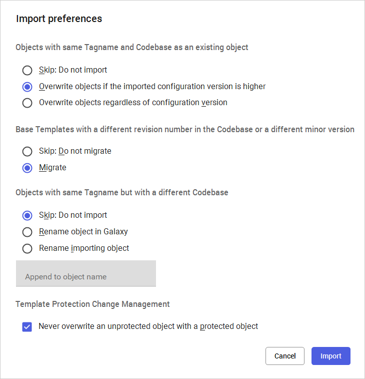
Import Preferences dialog with default settings. Section 1: "Overwrite if version is higher" (selected). Section 2: "Migrate" (selected). Section 3: "Skip: Do not import" (selected). Section 4: "Never overwrite unprotected with protected" (checked). Click Import to proceed (page 8-22)
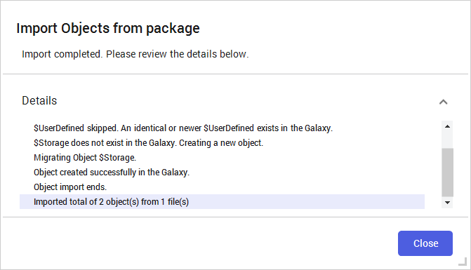
Import completed dialog with detailed log: (1) $UserDefined was skipped because an identical or newer version exists; (2) $Storage does not exist so a new object was created; (3) Object was migrated and created successfully; (4) Summary: "Imported total of 2 object(s) from 1 file(s)." Click Close (page 8-23)
Step 38. Click Close.
Step 39. In the upper-left corner, click the back arrow to return to the IDE. $Storage appears again in the Project toolset.
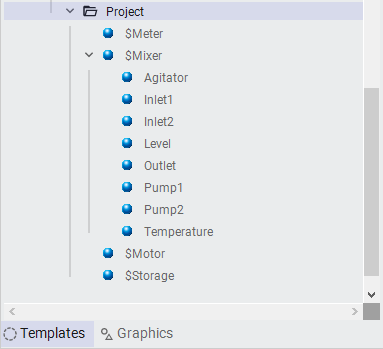
The Project toolset after import. $Storage (circled in red) has been restored to the hierarchy, appearing between $Motor and $Valve. The object was successfully imported from the $StorageV2.aaPKG file (page 8-23)
Verifying the Imported Version
Step 40. Open the $Storage properties.
Step 41. On the Attributes tab, verify configuration version 2 was imported.
Step 42. Click Close.
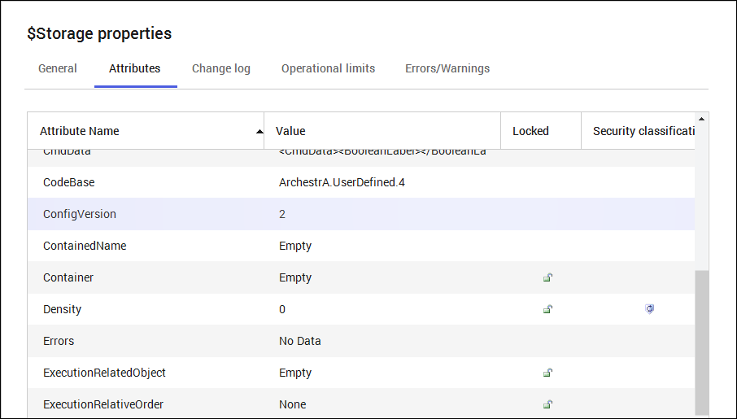
$Storage Properties dialog on the Attributes tab. The ConfigVersion shows Value = 2, confirming that Version 2 of the object was successfully imported. Only the original attributes (Pressure, Density) exist — the V3 attributes (Viscosity, Hardness) are not present (page 8-24)
Part E: Upgrading by Importing V3
Reference: Lab 14 (pages 8-25 to 8-26)
Now, you will import the $StorageV3.aaPKG file to upgrade the object to version 3.
Step 43. Click the Galaxy menu to get backstage, and then click Import.
Step 44. In the Object drop-down list, select From package.
Step 45. In the Import Objects from package dialog box, select $StorageV3.aaPKG.
Step 46. Click Open.
The Import Objects from package dialog. This time, $StorageV3.aaPKG is selected (highlighted) to upgrade the existing V2 object to V3. Both package files are visible in the C:\Training directory (page 8-25)
Step 47. In the Import preferences dialog box, leave the default options and click Import.
Step 48. When the import is complete, click Close.
Step 49. Click the back arrow to return to the IDE.
Verifying the Upgrade
Step 50. Open the $Storage properties.
Step 51. On the Attributes tab, verify configuration version 3 was imported.
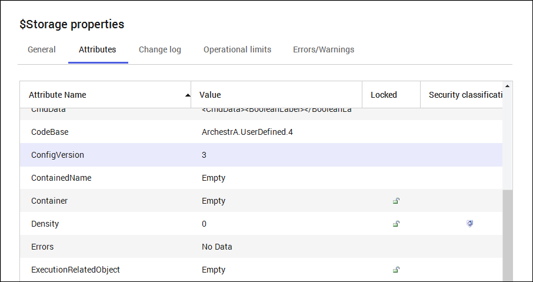
$Storage Properties dialog on the Attributes tab. The ConfigVersion shows Value = 3, confirming the upgrade was successful. The ConfigVersion row is highlighted in light blue, and the Density attribute shows a security classification icon (page 8-26)
Step 52. Click Close.
Step 53. In the $Storage configuration editor, verify that all four attributes are now visible in the attributes list.
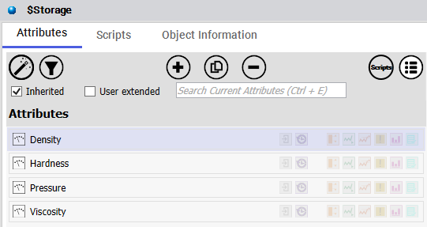
$Storage configuration editor on the Attributes tab. All four attributes are confirmed: Density, Hardness, Pressure, and Viscosity. The Inherited checkbox is checked and the toolbar shows Filter, Add, Copy, Remove, and view toggle buttons (page 8-26)
Step 54. Close the configuration editor.
Part F: Downgrading by Importing V2 Again
Reference: Lab 14 (pages 8-27 to 8-28)
Now, you will downgrade the $Storage object by importing a previous version of the object.
Step 55. Use the backstage area to import $StorageV2.aaPKG.
Step 56. In the Import preferences dialog box, Objects with same Tagname and Codebase as an existing object area, select the Overwrite objects regardless of configuration version option.
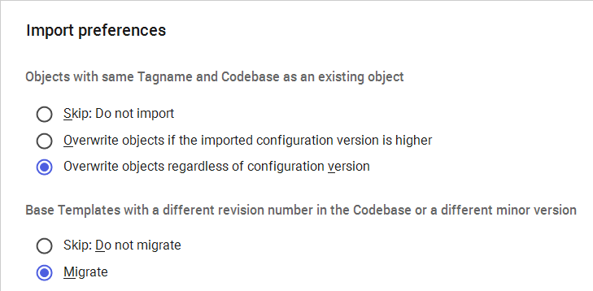
Import Preferences dialog configured for downgrade. In Section 1, "Overwrite objects regardless of configuration version" is selected (highlighted with blue dot and red outline). Section 2 shows "Migrate" selected. This forces the system to replace the V3 object with the older V2 package (page 8-27)
Tip — The "Overwrite regardless" option is essential for downgrades: The default setting only overwrites when the imported version is higher. To import an older version (a downgrade), you must explicitly select "Overwrite objects regardless of configuration version."
Step 57. Click Import.
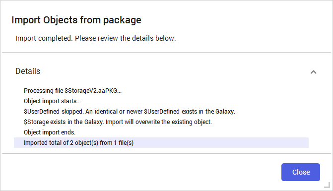
Import completed dialog. The log shows: (1) Processing file $StorageV2.aaPKG; (2) $UserDefined was skipped (identical/newer exists); (3) $Storage exists — the import will overwrite the existing object; (4) Summary: "Imported total of 2 object(s) from 1 file(s)." Click Close (page 8-27)
Step 58. Click Close.
Verifying the Downgrade
Step 59. Return to the IDE and open the $Storage properties, then on the Attributes tab, verify configuration version 2 was imported.
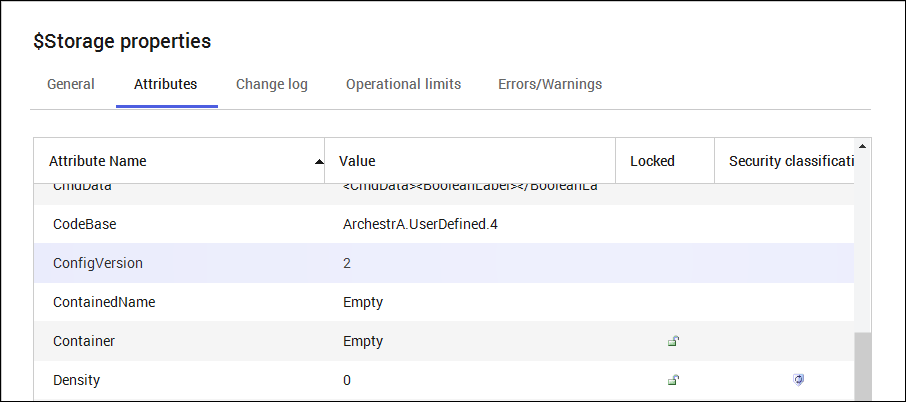
$Storage Properties dialog on the Attributes tab. The ConfigVersion shows Value = 2 (highlighted), confirming the downgrade from V3 to V2 was successful. The object now contains only the original two custom attributes (page 8-28)
Step 60. Click Close.
Step 61. In the $Storage configuration editor, verify that the two attributes that were added in version 3 no longer exist.
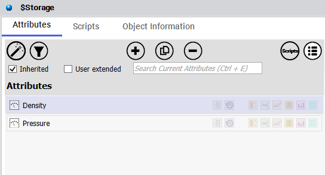
$Storage configuration editor after downgrade. Only Density and Pressure remain in the attributes list — the V3 attributes (Hardness, Viscosity) have been removed by the downgrade import. The Inherited checkbox is checked (page 8-28)
Step 62. Close the configuration editor.
Part G: Duplicating an Object by Import
Reference: Lab 14 (pages 8-29 to 8-30)
Next, you will import an object to create a duplicate of the object.
Step 63. Right-click $Storage and rename the object $Storage1.
Step 64. Use the backstage area to import $StorageV2.aaPKG file.
Step 65. In the Import preferences dialog box, leave the default options and click Import.
Import completed dialog. Since $Storage was renamed to $Storage1, the import found that $Storage does not exist in the Galaxy and created a new object. The log shows: "$Storage does not exist in the Galaxy. Creating a new object." Summary: "Imported total of 2 object(s) from 1 file(s)." Click Close (page 8-29)
Step 66. Click Close.
The Project toolset after the rename and import operation. The renamed $Storage1 and the newly imported $Storage should both appear in the tree. (Note: this screenshot shows the tree state after the prior deletion step.) (page 8-29)
Creating duplicates by import: By renaming an existing object before importing a package with the same name, you can create a duplicate. The import creates a new $Storage object because the original was renamed to $Storage1. Both objects are identical except for their tag names.
In the IDE, both $Storage (imported) and $Storage1 (renamed original) should appear in the Project toolset. They are identical except for their tag names. <End of Lab> (page 8-30)
25.6 Summary of Export/Import Workflow
Complete Object Lifecycle Management:
Create a new derived template from a base (e.g., $UserDefined → $Storage)
Modify the object (add attributes, change configurations) and check in
Export the object as a versioned .aaPKG file (e.g., $StorageV2.aaPKG, $StorageV3.aaPKG)
Upgrade by importing a higher-versioned package (default preferences)
Downgrade by importing an older package with "Overwrite regardless" option
Duplicate by renaming the existing object, then importing the same package
25.7 Quiz
Knowledge Check
1. What file extension is used for AVEVA Application Server object export/import packages?
.aaPKG — This is the Galaxy export/import file format that contains selected objects, their associated templates, and configuration state.
2. What happens to checked-out objects during an export?
Only the checked-in versions are exported. The current checked-out (uncommitted) changes are NOT included in the export.
3. What is the difference between a Galaxy Export and a Database Manager Backup?
A Galaxy Export does NOT save change logs and removes security model settings. A Database Manager Backup saves change logs and retains security model settings. Export is portable between Galaxies; backup restore is server-specific.
4. Which import preference must be selected to downgrade an object (import an older version over a newer one)?
"Overwrite objects regardless of configuration version" — The default "Overwrite if version is higher" setting will NOT allow an older version to overwrite a newer one.
5. What is the ConfigVersion attribute and how does it change?
ConfigVersion is an attribute that tracks the configuration revision of an object. It increases by 1 each time changes to the object are checked in. Version 1 = initial creation, Version 2 = after first modification, etc.
6. What is NOT included in an object export?
Script functions (script function libraries) are NOT included in an export. They must be transferred separately. Additionally, change logs and security model settings are not included.
7. How can you create a duplicate of an existing object using the import feature?
Rename the existing object to a different tag name (e.g., $Storage → $Storage1), then import the original .aaPKG file. Since the original name no longer exists, the import creates a new object with that name, resulting in two identical objects with different tag names.
Source: AVEVA Application Server 2023 Training Manual, Module 8 Section 1 + Lab 14